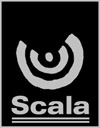
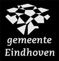

Home
Pers
The Queen Symphony
Harmonieorkest Auletes
De Koren
Dirigenten
Programma
Contact
Sponsoren
Sponsoren
Deze uitvoering van The Queen Symphony wordt mede mogelijk gemaakt door:


Vrijdag 16 november 2007
20:15 uur
Muziekcentrum Frits Philips
Eindhoven